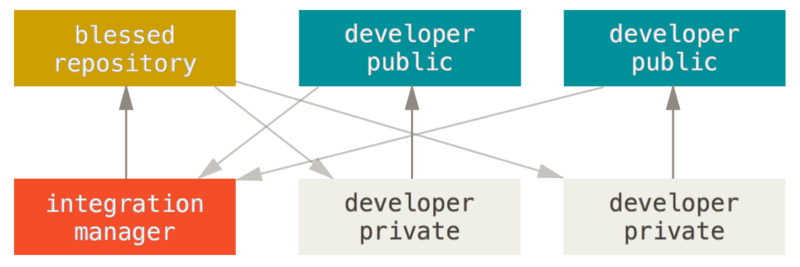
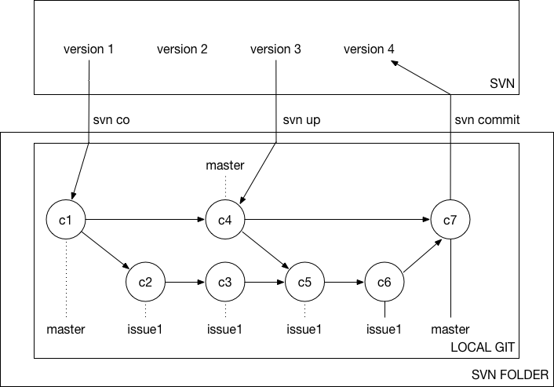

<!DOCTYPE html>
<html lang="en">
<head>
    <!-- hexo-inject:begin --><!-- hexo-inject:end --><meta charset="UTF-8">
<meta name="viewport"
      content="width=device-width, user-scalable=no, initial-scale=1.0, maximum-scale=1.0, minimum-scale=1.0">
<meta http-equiv="X-UA-Compatible" content="ie=edge">

    <meta name="description" content="其实不过是杂记">


<title>Git Story | 小记</title>


    <link rel="icon" href="/favicon.ico">


    <!-- stylesheets list from _config.yml -->
    
    <link rel="stylesheet" href="/css/style.css">
    


    <!-- scripts list from _config.yml -->
    
    <script src="/js/script.js"></script>
    
    <script src="/js/tocbot.min.js"></script><!-- hexo-inject:begin --><!-- hexo-inject:end -->
    


    
    
        
    


</head>
<body>
    <!-- hexo-inject:begin --><!-- hexo-inject:end --><div class="wrapper">
        <header>
    <nav class="navbar">
        <div class="container">
            <div class="navbar-header header-logo"><a href="/">小记</a></div>
            <div class="menu navbar-right">
                
                    <a class="menu-item" href="/archives">Posts</a>
                
                    <a class="menu-item" href="/category">Categories</a>
                
                    <a class="menu-item" href="/tag">Tags</a>
                
                    <a class="menu-item" href="/about">About</a>
                
                <input id="switch_default" type="checkbox" class="switch_default">
                <label for="switch_default" class="toggleBtn"></label>
            </div>

        </div>
    </nav>

    
    <nav class="navbar-mobile" id="nav-mobile">
        <div class="container">
            <div class="navbar-header">
                <div>
                    <a href="/">小记</a><a id="mobile-toggle-theme">·&nbsp;Light</a>
                </div>
                <div class="menu-toggle" onclick="mobileBtn()">&#9776; Menu</div>
            </div>
            <div class="menu" id="mobile-menu">
                
                    <a class="menu-item" href="/archives">Posts</a>
                
                    <a class="menu-item" href="/category">Categories</a>
                
                    <a class="menu-item" href="/tag">Tags</a>
                
                    <a class="menu-item" href="/about">About</a>
                
            </div>
        </div>
    </nav>

</header>
<script>
    var mobileBtn = function f() {
        var toggleMenu = document.getElementsByClassName("menu-toggle")[0];
        var mobileMenu = document.getElementById("mobile-menu");
        if(toggleMenu.classList.contains("active")){
           toggleMenu.classList.remove("active")
            mobileMenu.classList.remove("active")
        }else{
            toggleMenu.classList.add("active")
            mobileMenu.classList.add("active")
        }
    }
</script>
        <div class="main">
            <div class="container">
    
    
        <div class="post-toc">
    <div class="tocbot-list">
    </div>
    <div class="tocbot-list-menu">
        <a class="tocbot-toc-expand" onclick="expand_toc()">Expand all</a>
        <a onclick="go_top()">Back to top</a>
        <a onclick="go_bottom()">Go to bottom</a>
    </div>
</div>

<script>
    document.ready(
        function () {
            tocbot.init({
                tocSelector: '.tocbot-list',
                contentSelector: '.post-content',
                headingSelector: 'h1, h2, h3, h4, h5',
                collapseDepth: 1,
                orderedList: false,
                scrollSmooth: true,
            })
        }
    )

    function expand_toc() {
        var b = document.querySelector(".tocbot-toc-expand");
        tocbot.init({
            tocSelector: '.tocbot-list',
            contentSelector: '.post-content',
            headingSelector: 'h1, h2, h3, h4, h5',
            collapseDepth: 6,
            orderedList: false,
            scrollSmooth: true,
        });
        b.setAttribute("onclick", "collapse_toc()");
        b.innerHTML = "Collapse all"
    }

    function collapse_toc() {
        var b = document.querySelector(".tocbot-toc-expand");
        tocbot.init({
            tocSelector: '.tocbot-list',
            contentSelector: '.post-content',
            headingSelector: 'h1, h2, h3, h4, h5',
            collapseDepth: 1,
            orderedList: false,
            scrollSmooth: true,
        });
        b.setAttribute("onclick", "expand_toc()");
        b.innerHTML = "Expand all"
    }

    function go_top() {
        window.scrollTo(0, 0);
    }

    function go_bottom() {
        window.scrollTo(0, document.body.scrollHeight);
    }

</script>
    

    
    <article class="post-wrap">
        <header class="post-header">
            <h1 class="post-title">Git Story</h1>
            
                <div class="post-meta">
                    
                        Author: <a itemprop="author" rel="author" href="/">Arthur Lu</a>
                    

                    
                        <span class="post-time">
                        Date: <a href="#">December 10, 2018&nbsp;&nbsp;22:48:23</a>
                        </span>
                    
                    
                </div>
            
        </header>

        <div class="post-content">
            <h1 id="一、Git概述"><a href="#一、Git概述" class="headerlink" title="一、Git概述"></a>一、Git概述</h1><p>Linux 内核开源项目有着为数众多的参与者。整个项目组开始启用一个专有的分布式版本控制系统BitKeeper来管理和维护代码。2005年，开发BitKeeper的商业公司同Linux内核开源社区的合作关系结束，他们收回了 Linux内核社区免费使用BitKeeper的权力。 这就迫使Linux开源社区(特别是Linux的缔造者Linus Torvalds)开发出自己的版本系统。</p>
<h2 id="1-版本控制系统"><a href="#1-版本控制系统" class="headerlink" title="1.版本控制系统"></a>1.版本控制系统</h2><blockquote>
<p>版本控制系统(VCS)是一种记录一个或若干文件内容变化，以便将来查阅特定版本修订情况的系统。</p>
</blockquote>
<h3 id="1-本地版本控制系统"><a href="#1-本地版本控制系统" class="headerlink" title="1).本地版本控制系统"></a>1).本地版本控制系统</h3><p><br>在本地进行版本管理, 常见的如RCS。</p>
<h3 id="2-集中化的版本控制系统"><a href="#2-集中化的版本控制系统" class="headerlink" title="2).集中化的版本控制系统"></a>2).集中化的版本控制系统</h3><p><br>将版本管理集中于一台单一服务器，该服务器上保存了文件所有的修订版本，开发人员可以从服务器上拷贝工作目录，完成工作后提交到服务器更新修订版本。常见的如CVS、Subversion和Perforce。主要问题是单点故障导致工作阻塞，严重的会导致修订历史版本数据全部丢失。</p>
<h3 id="3-分布式版本控制系统"><a href="#3-分布式版本控制系统" class="headerlink" title="3).分布式版本控制系统"></a>3).分布式版本控制系统</h3><p><br>分布式管理控制系统中每个节点都包含整个仓库的拷贝，如Git。</p>
<h2 id="2-文件存储方式"><a href="#2-文件存储方式" class="headerlink" title="2.文件存储方式"></a>2.文件存储方式</h2><ul>
<li><p>SVN等传统VCS的文件存储方式:记录版本间的增量<br></p>
</li>
<li><p>Git的文件存储方式:记录每个版本的快照<br></p>
</li>
</ul>
<p>对于Git的文件存储方式，这样的描述其实并不准确，Git是混合了增量和快照的方式。默认采用快照的方式，当满足一些条件的时候(如git push)，将会对快照进行处理，并计算相似快照的增量进行存储。所以总的来说，通常git仓库会比传统VCS的仓库文件大。下图是Git存储中常用的三种区域概念：</p>
<p></p>
<ul>
<li>工作目录(work directory), 用户的磁盘工作目录</li>
<li>暂存区(stage/index), 保存了下次将提交的文件列表信息</li>
<li>Git仓库(repo), 用来保存项目的元数据和提交的数据的地方, 提交的数据都是可以恢复的</li>
</ul>
<h2 id="3-Git配置"><a href="#3-Git配置" class="headerlink" title="3.Git配置"></a>3.Git配置</h2><p>Git配置是KV存储结构, 并采用了分级方式，每一个级别覆盖上一个级别的同名配置:</p>
<ul>
<li>设置配置<ul>
<li>git config –system <code>&lt;key&gt; &lt;value&gt;</code></li>
<li>git config –global <code>&lt;key&gt; &lt;value&gt;</code></li>
<li>git config <code>&lt;key&gt; &lt;value&gt;</code></li>
</ul>
</li>
<li>读取配置<ul>
<li>git config –system <code>&lt;key&gt;</code></li>
<li>git config –global <code>&lt;key&gt;</code></li>
<li>git config <code>&lt;key&gt;</code></li>
</ul>
</li>
<li>遍历配置项 : <code>--list</code></li>
</ul>
<h2 id="4-最小的Demo"><a href="#4-最小的Demo" class="headerlink" title="4.最小的Demo"></a>4.最小的Demo</h2><figure class="highlight sh"><table><tr><td class="gutter"><pre><span class="line">1</span><br><span class="line">2</span><br><span class="line">3</span><br><span class="line">4</span><br><span class="line">5</span><br><span class="line">6</span><br><span class="line">7</span><br><span class="line">8</span><br><span class="line">9</span><br><span class="line">10</span><br><span class="line">11</span><br><span class="line">12</span><br></pre></td><td class="code"><pre><span class="line"><span class="comment"># 初始化配置</span></span><br><span class="line">$ git config --global user.name arthurlu</span><br><span class="line">$ git config --global user.email arthurlu@tencent.com</span><br><span class="line"></span><br><span class="line"><span class="comment"># 初始化git</span></span><br><span class="line">$ git init</span><br><span class="line"></span><br><span class="line"><span class="comment"># 提交到stage</span></span><br><span class="line">$ git add .</span><br><span class="line"></span><br><span class="line"><span class="comment"># 提交到git仓库, 提交人的信息会找配置文件中的user.name和user.email</span></span><br><span class="line">$ git commit -m<span class="string">"initial"</span></span><br></pre></td></tr></table></figure>
<h1 id="二、Git基础"><a href="#二、Git基础" class="headerlink" title="二、Git基础"></a>二、Git基础</h1><h2 id="1-初始化仓库"><a href="#1-初始化仓库" class="headerlink" title="1.初始化仓库"></a>1.初始化仓库</h2><p><code>git init</code>, 该命令将会在当前目录中创建<code>.git/</code>目录, 该目录是Git仓库的入口，git仓库上可以进行嵌套创建的。</p>
<p><code>git clone &lt;uri&gt;</code>, 若已知远程仓库的uri,并且用户有读权限, 则可以直接clone。</p>
<h2 id="2-添加和提交"><a href="#2-添加和提交" class="headerlink" title="2.添加和提交"></a>2.添加和提交</h2><ul>
<li><code>git add .</code> , 将当前目录下的所有文件纳入跟踪和stage。</li>
<li>git add <code>&lt;file&gt;</code>, 将指定文件纳入跟踪或将文件放入stage。</li>
<li>git commit -m”message”, 提交并附上提交信息。</li>
<li>git commit -a -m”message”, 将添加和提交合并为一个操作。注意，该命令会把所有修改的文件进行提交，但是不包括未跟踪的文件。</li>
</ul>
<h2 id="3-日志"><a href="#3-日志" class="headerlink" title="3.日志"></a>3.日志</h2><p>该命令可以查询当前分支上的提交历史, 默认不用任何参数的话，git log会按提交时间列出所有的更新，最近的更新排在最上面。带上参数git log有更强的功能:</p>
<ul>
<li>git log <code>--pretty</code>, 简化显示, 以及进行格式化显示</li>
<li>git log <code>-p -&lt;num&gt;</code>, 显示num次数个提交，并且显示每次提交进行的修改。</li>
<li>git log <code>--graph</code>, 显示 ASCII 图形表示的分支合并历史。</li>
</ul>
<h2 id="4-差异比较"><a href="#4-差异比较" class="headerlink" title="4.差异比较"></a>4.差异比较</h2><p><code>git diff</code>类似于<code>svn diff</code>，用来显示修改前后的区别，但是git有<code>工作目录</code>, <code>storage</code>, <code>repo</code>三个区域的概念，因此git diff被设计来支持3个区域之间的比较:</p>
<ul>
<li>git diff, 比较当前工作目录和暂存区之间的差异。</li>
<li>git diff –cache, 比较暂存区和git仓库之间的差异。</li>
<li>git diff HEAD, 比较工作目录和git仓库之间的差异。</li>
<li>git diff <code>&lt;commit&gt;</code>, 比较工作目录和某次提交之间的差异。</li>
<li>git diff <code>&lt;commit1&gt;</code> <code>&lt;commit2&gt;</code>, 比较工作目录和某次提交之间的差异。</li>
</ul>
<h2 id="5-撤销修改"><a href="#5-撤销修改" class="headerlink" title="5.撤销修改"></a>5.撤销修改</h2><p><code>git reset</code>类似于<code>svn revert</code>， 可以对更改进行撤销，但是git的reset指令能力更强。<code>git reset</code>命令本质有两个操作：</p>
<ul>
<li>使用指定的提交快照来覆盖存储区或工作目录, 没有指定提交对象时, 默认为当前的HEAD所指的快照。</li>
<li>将当前HEAD和分支引用移动至目标提交快照, 没有指定提交对象时, 默认为当前HEAD所指的快照, 也就是不移动。</li>
</ul>
<p>reset具体的来说有三种指令:</p>
<ul>
<li><code>git reset --soft &lt;commit&gt;</code>, 单纯移动HEAD和分支, 其他不变.(<code>git checkout &lt;commit&gt;</code>只移动HEAD, 不移动branch)</li>
<li><code>git reset [--mixed] &lt;commit&gt;</code>, 移动HEAD和分支，并且把指定提交对象覆盖暂存区</li>
<li><code>git reset --hard &lt;commit&gt;</code>, 移动HEAD和分支，并且把指定提交对象覆盖暂存区和工作区</li>
</ul>
<p>下面是一些常用的reset命令:</p>
<ul>
<li>git reset, 撤销对暂存区的修改, 粒度最小为文件。</li>
<li>git reset –hard, 撤销对工作目录的修改， <code>不能带路径</code>。</li>
</ul>
<p>需要注意, <code>git reset --hard</code>相当危险，它会用最新的提交快照覆盖掉暂存区和工作目录, 如果希望带路径进行撤销修改可以使用命令<code>git checkout -- &lt;path&gt;</code>，该指令可以用暂存区覆盖工作目录。</p>
<h3 id="6-Git标签"><a href="#6-Git标签" class="headerlink" title="6.Git标签"></a>6.Git标签</h3><p>可以在HEAD所指的提交上制作一个特殊的引用，这个引用就是tag标签，通常在发布版本的时候会打上标签。</p>
<ul>
<li>git tag, 列出当前所有的tag</li>
<li>git tag <code>&lt;new-tag-name&gt; [-m &quot;message&quot;]</code>, 在当前HEAD处打上标签。</li>
<li>git tag -a <code>&lt;new-tag-name&gt;</code> <code>&lt;commit&gt;</code>, 在知道提交对象hash情况下，可以对指定的提交打上标签。</li>
</ul>
<p>需要注意，在使用远程仓库时，标签不会自动推送到服务器上，需要显示进行推送, 例如<code>git push origin &lt;tag-name&gt;</code>。</p>
<h3 id="7-移除文件"><a href="#7-移除文件" class="headerlink" title="7.移除文件"></a>7.移除文件</h3><p>git有工作目录和暂存区，git rm可以从工作目录或暂存区移除文件，并通过一个git commit将移除的文件的暂存区固化到Git仓库中。</p>
<ul>
<li>git rm, 从工作区和暂存区移除文件。</li>
<li>git rm –cached, 只移除暂存区域的文件但是保留工作区的文件，该命令主要是删除对文件的跟踪。</li>
<li>–ignore-unmatch, 当文件不存在时不会报错, 经常用于配合批量提交对象中的文件删除。</li>
</ul>
<h1 id="三、Git分支"><a href="#三、Git分支" class="headerlink" title="三、Git分支"></a>三、Git分支</h1><h2 id="1-提交对象"><a href="#1-提交对象" class="headerlink" title="1.提交对象"></a>1.提交对象</h2><p>每次commit都会在Git仓库中生成一个提交对象, 每个提交对象有3个重要的数据:</p>
<ul>
<li>提交对象的hash值, 唯一标识了Git仓库中的一个提交对象</li>
<li>当前提交文件的快照(tree根目录)</li>
<li>前一次提交对象的hash值</li>
</ul>
<p>Git的分支，其实本质上仅仅是指向提交对象的指针，Git的默认分支名字是master。<code>HEAD</code>是一个特殊指针，用来指示当前所处的提交对象，这个指针可以指向分支名，也可以指向提交对象。每次提交都会让HEAD指针指向新的提交对象，若HEAD指针指向分支，则分支也会指向新的提交对象。<br></p>
<figure class="highlight sh"><table><tr><td class="gutter"><pre><span class="line">1</span><br><span class="line">2</span><br><span class="line">3</span><br><span class="line">4</span><br><span class="line">5</span><br><span class="line">6</span><br><span class="line">7</span><br><span class="line">8</span><br></pre></td><td class="code"><pre><span class="line">$ git cat-file -p 13fc80e00ad0ec22354f7782b199606eb4304e9c</span><br><span class="line"><span class="comment"># ========================== 以下是输出 ==========================</span></span><br><span class="line">tree 06d4f0f5e8d2dbd7d1e4b4fa082ee2dc3578f1b1</span><br><span class="line">parent 4bbf1684503e78886ed3517a7b1fa0e49ba163fb</span><br><span class="line">author asir &lt;asirlu@foxmail.com&gt; 1547480491 +0800</span><br><span class="line">committer asir &lt;asirlu@foxmail.com&gt; 1547480491 +0800</span><br><span class="line"></span><br><span class="line">delete</span><br></pre></td></tr></table></figure>
<h2 id="2-常用命令"><a href="#2-常用命令" class="headerlink" title="2.常用命令"></a>2.常用命令</h2><ul>
<li>git branch <code>&lt;new-branch&gt;</code>, 创建新分支</li>
<li>git branch -v, 列出所有的分支</li>
<li>git branch -d/-D <code>&lt;branch&gt;</code>, 删除/强制删除分支</li>
<li>git checkout <code>&lt;branch&gt;</code>, 切换到新分支</li>
<li>git checkout -b <code>&lt;branch&gt;</code>, 创建新分支并切换过去</li>
</ul>
<h2 id="3-Merge合并"><a href="#3-Merge合并" class="headerlink" title="3.Merge合并"></a>3.Merge合并</h2><p>git merge <code>&lt;branch&gt;</code>, 将<code>&lt;branch&gt;</code>合并到当前分支。<br><br>上图执行<code>git checkout master</code>, <code>git checkout merge iss53</code>，即可合并得到下图。<br><br>从图中可以看出，合并会生成一个新的提交对象<code>C6</code>。在合并中，不同的分支若对同一个文件的同一位置进行修改，则会发生冲突，这需要人为进行合并。</p>
<h2 id="4-变基"><a href="#4-变基" class="headerlink" title="4.变基"></a>4.变基</h2><p>git rebase <code>&lt;branch&gt;</code>, 将当前分支变基到指定<code>&lt;branch&gt;</code>分支上。<br><br>上图执行<br><figure class="highlight sh"><table><tr><td class="gutter"><pre><span class="line">1</span><br><span class="line">2</span><br></pre></td><td class="code"><pre><span class="line">git checkout experiment</span><br><span class="line">git rebase master</span><br></pre></td></tr></table></figure></p>
<p>可以变为下图<br><br>再执行以下指令，可以删除多余的提交对象<code>C4</code>, 并将master更新。<br><figure class="highlight sh"><table><tr><td class="gutter"><pre><span class="line">1</span><br><span class="line">2</span><br><span class="line">3</span><br><span class="line">4</span><br><span class="line">5</span><br><span class="line">6</span><br></pre></td><td class="code"><pre><span class="line"><span class="comment"># 更新master</span></span><br><span class="line">git checkout master</span><br><span class="line">git merge experiment</span><br><span class="line"></span><br><span class="line"><span class="comment"># 回收掉多余的提交对象</span></span><br><span class="line">git gc</span><br></pre></td></tr></table></figure></p>
<p>rebase和merge的功能类似，但是可以使得提交日志线性化，而不会像merge导致提交日志分叉。</p>
<h1 id="四、Git远程仓库"><a href="#四、Git远程仓库" class="headerlink" title="四、Git远程仓库"></a>四、Git远程仓库</h1><p>Git可以添加多个远程仓库，并将版本push到远程仓库或是pull到本地。每个远程仓库的分支在本地也会映射到一个分支，分支名为<code>&lt;remote-name&gt;/&lt;branch-name&gt;</code>代表着指定远程仓库的指定分支。远程仓库映射到本地的分支是只读的，若在该分支上进行提交，分支是不会指向新的提交对象，只有pull和push的时候本地的远程仓库分支才会改变。分支情况如下图简示:<br></p>
<h2 id="1-常用命令"><a href="#1-常用命令" class="headerlink" title="1.常用命令"></a>1.<em>常用命令</em></h2><ul>
<li>git remote -v, 列出远程仓库。</li>
<li>git remote add <code>&lt;remote-server-name&gt;</code> <code>&lt;uri&gt;</code>, 添加远程仓库。</li>
<li>git remote remove <code>&lt;remote-server-name&gt;</code>, 移除远程仓库。</li>
<li>git clone <code>&lt;uri&gt;</code>, 从远程仓库clone, 会自动将其添加到远程仓库。</li>
</ul>
<h2 id="2-拉取合并"><a href="#2-拉取合并" class="headerlink" title="2.拉取合并"></a>2.<em>拉取合并</em></h2><p>拉取远程仓库分支，这一行为本身和自己的工作分支是独立的，拉去远程仓库会更新远处仓库在本地的映射，<code>git pull</code>会自动将远程仓库在本地的映射进行合并，<code>git fetch</code>不会自动合并。</p>
<ul>
<li>git pull <remote-name> <branch-name></branch-name></remote-name></li>
<li>git fetch <remote-name> <branch-name></branch-name></remote-name></li>
</ul>
<h2 id="3-推送合并"><a href="#3-推送合并" class="headerlink" title="3.推送合并"></a>3.<em>推送合并</em></h2><p><code>git push</code>会将本地的分支直接推送到远程仓库的分支上，若远程仓库的目标分支中包含了本地中没有的工作，Git会建议客户端拉取服务器工作，进行合并后再push。git push也会更新本地的远程分支。</p>
<h1 id="五、Git常用工作流"><a href="#五、Git常用工作流" class="headerlink" title="五、Git常用工作流"></a>五、Git常用工作流</h1><h2 id="1-特性分支"><a href="#1-特性分支" class="headerlink" title="1.特性分支"></a>1.特性分支</h2><p>特性分支是一种短期分支，通常是为了完成一个需求或是解决一个Bug而建立。特性分支完成后，会将其合并回master分支。<br></p>
<h2 id="2-集中式工作流及分支模型"><a href="#2-集中式工作流及分支模型" class="headerlink" title="2.集中式工作流及分支模型"></a>2.集中式工作流及分支模型</h2><p>通常在企业采用集中式工作流程，这和SVN中的工作模式比较类似。<br><br>该工作流的分支模型多变，通常集中式的远程仓库中可能会有以下分支</p>
<ul>
<li>mater, 正式环境分支</li>
<li>test, 测试环境分支</li>
<li>dev, 开发分支</li>
<li>issue1, 需要多人进行开发的迭代分支</li>
<li>arthurlu, 开发人员分支</li>
</ul>
<p>对于大型项目的master、test和dev分支，它们相当重要，不允许开发人员直接push或merge这些分支，而是只能push到特性分支，merge操作只提供给特别的管理人员。开发人员开发完成后，会把开发的工作push到某个分支，然后发出<code>merge request</code>，项目团队人员检查后会进行merge。</p>
<h2 id="3-集成管理者工作流"><a href="#3-集成管理者工作流" class="headerlink" title="3.集成管理者工作流"></a>3.集成管理者工作流</h2><p>这也是GitHub开源项目进行贡献的核心流程。<br><br>会有一个管理者远程仓库(blessed), 该远程仓库只能由管理者读写, 其他开发人员只有读权限。各个开发人员可以fork这个远程仓库到自己的远程仓库中，再将自己的远程仓库clone到本地进行开发，开发完成后上传到开发人员自己的远程仓库。开发人员用远程仓库发起<code>pull request</code>，请求管理者将其开发的特性/分支合并到管理者的仓库中。</p>
<h1 id="六、Git底层机制"><a href="#六、Git底层机制" class="headerlink" title="六、Git底层机制"></a>六、Git底层机制</h1><h2 id="1-Git目录"><a href="#1-Git目录" class="headerlink" title="1.Git目录"></a>1.Git目录</h2><p><code>git init</code>会在当前目录下生成一个<code>.git</code>的隐藏目录，该目录就是本地Git仓库的入口。该目录下包含了一下子目录和文件：<br><figure class="highlight sh"><table><tr><td class="gutter"><pre><span class="line">1</span><br><span class="line">2</span><br><span class="line">3</span><br><span class="line">4</span><br><span class="line">5</span><br><span class="line">6</span><br><span class="line">7</span><br><span class="line">8</span><br><span class="line">9</span><br><span class="line">10</span><br><span class="line">11</span><br><span class="line">12</span><br></pre></td><td class="code"><pre><span class="line">.</span><br><span class="line">├── HEAD            <span class="comment"># 当前所处的分支/提交对象</span></span><br><span class="line">├── objects/        <span class="comment"># 所有add/commit的对象存储</span></span><br><span class="line">├── refs/           <span class="comment"># 指向提交对象的指针(hash)</span></span><br><span class="line">|   ├── heads       <span class="comment"># 记录分支</span></span><br><span class="line">|   ├── remotes     <span class="comment"># 记录远程分支</span></span><br><span class="line">|   └── tags        <span class="comment"># 记录标签</span></span><br><span class="line">├── index           <span class="comment"># 暂存区文件, 记录当前暂存区, 里面是一组Tree对象。git rm就是删除的这个里面对Blob的引用。</span></span><br><span class="line">├── hooks/          <span class="comment"># 保存git钩子文件</span></span><br><span class="line">├── description     <span class="comment"># GitWeb所需要的信息</span></span><br><span class="line">├── packed-refs     <span class="comment"># 将refs里面的指针打包存放, Git会首先在refs目录中查找指定的引用，然后再到packed-refs文件中查找</span></span><br><span class="line">└── info/           <span class="comment"># 用以放置那些不希望被记录在.gitignore 文件中的忽略模式</span></span><br></pre></td></tr></table></figure></p>
<p>Git除了merge, checkout, rebase等等应用层命令外，还有一系列的底层命令。</p>
<h2 id="2-Git对象"><a href="#2-Git对象" class="headerlink" title="2.Git对象"></a>2.Git对象</h2><ul>
<li>Blob对象, 文件都会生成一个Blob对象保存在Git仓库中。</li>
<li>Tree对象, Tree对象用来组织成文件(Blob只有文件内容，不会有文件信息)或是目录。</li>
<li>Commit对象, 每次提交都会对整个工作目录生成Tree对象以及一个Commit对象，Commit对象指向工作目录的根树对象。</li>
</ul>
<p>所有对象都会存储在<code>.git/objects/</code>目录下，并且都通过一个唯一的<code>hash</code>标识对象，对于任何对象可以使用<code>git cat-file</code>命令:</p>
<ul>
<li>git cat-file -t <code>&lt;hash&gt;</code>, 显示指定hash对象的类型。</li>
<li>git cat-file -p <code>&lt;hash&gt;</code>, 根据hash对象的类型，自动显示其中的数据。</li>
</ul>
<h3 id="1-Blob对象和Git的KV操作"><a href="#1-Blob对象和Git的KV操作" class="headerlink" title="1).Blob对象和Git的KV操作"></a>1).<em>Blob对象和Git的KV操作</em></h3><p>Git采用kv对数据库, 在db中存入value, db将会分配一个key，通过该键值，可以任意适合进行检索。其实key就是value的类hash, value不变则key不变。</p>
<ul>
<li>echo <code>&quot;&lt;value&gt;&quot;</code> | git hash-object -w –stdin<ul>
<li>-w, 将指定的值存储在Git仓库中, 否则只会返回key。</li>
<li>–stdin, 从标准输入获取内容。</li>
</ul>
</li>
<li>git has-object -w <code>&lt;file&gt;</code>,  将<code>&lt;file&gt;</code>中的数据作为value保存, <code>git add</code>本质上就是做这样的操作。</li>
</ul>
<p>生成的kv对象将会生成在<code>.git/objects/</code>目录下，每个kv对就是一个该目录下的文件。这样的对象在Git中被称为<code>blob对象</code></p>
<h3 id="2-Tree对象"><a href="#2-Tree对象" class="headerlink" title="2).Tree对象"></a>2).<em>Tree对象</em></h3><p>需要注意的是blob中仅仅保存了文件的数据，并没有保存文件的名称等信息。通过tree对象，可以组织文件的名字，也可以将多个文件组织在一起，这是一个类似与目录结构的对象。每个<code>tree object</code>都包含了一个或多个<code>tree entry</code>, 每个<code>tree entry</code>中包含了文件信息以及一个指向blob或子tree的hash指针。每次提交针对整个工作目录生成多个Tree对象，并以树形结构进行连接。一次提交Tree对象类似如下结构：<br><br>要建立类似图示的树结构，可以通过以下命令可以快速建立：<br><figure class="highlight sh"><table><tr><td class="gutter"><pre><span class="line">1</span><br><span class="line">2</span><br><span class="line">3</span><br><span class="line">4</span><br><span class="line">5</span><br><span class="line">6</span><br><span class="line">7</span><br><span class="line">8</span><br><span class="line">9</span><br><span class="line">10</span><br></pre></td><td class="code"><pre><span class="line"><span class="comment"># 构建树结构</span></span><br><span class="line"><span class="built_in">echo</span> <span class="string">"# title"</span> &gt; README</span><br><span class="line"><span class="built_in">echo</span> <span class="string">"test file"</span> &gt; Rakefile</span><br><span class="line">mkdir lib</span><br><span class="line"><span class="built_in">echo</span> <span class="string">"simple"</span> &gt; lib/simplegit.rb</span><br><span class="line"></span><br><span class="line"><span class="comment"># 提交并显示树结构</span></span><br><span class="line">git add .</span><br><span class="line">git commit -m<span class="string">"test version 1"</span></span><br><span class="line">git cat-file -p master^&#123;tree&#125;</span><br></pre></td></tr></table></figure></p>
<ul>
<li>git cat-file -p master^{tree}, 表示master分支所指向的树对象(每次提交都会指向一个树对象)</li>
<li>git update-index –add –cacheinfo <code>&lt;mode&gt;</code> <code>&lt;file-hash&gt;</code> <code>&lt;file&gt;</code>, 将文件放到暂存区</li>
<li>git write-tree, 将暂存区内容写入一个树对象</li>
</ul>
<h3 id="3-Commit对象"><a href="#3-Commit对象" class="headerlink" title="3).Commit对象"></a>3).<em>Commit对象</em></h3><p>每次commit命令，都会将暂存区生成一个树对象，再用一个提交对象指向该树对象。可以通过底层指令实现提交:</p>
<ul>
<li>echo <code>&quot;message&quot;</code> | git commit-tree <code>&lt;tree object hash&gt; [-p &lt;parent&gt;]</code></li>
</ul>
<p>提交对象的组织可以是如下结构：<br></p>
<p>每次将工作目录的修改存提交到Git仓库的底层步骤:</p>
<ul>
<li>git add —&gt; 将改动涉及到的文件全部生成blob对象(不会生成tree对象)</li>
<li>git commit<ul>
<li>将改动文件的所有父路径都生成一个tree对象, 每次修改必定会包含根目录，因此根目录一定是一个新的tree对象，没有修改的文件或目录采用原hash，新生成的采用新的hash。</li>
<li>生成一个提交对象，指向根目录的tree对象。</li>
</ul>
</li>
</ul>
<p>下图是3次提交所生成的各个对象, 以帮助理解:<br><figure class="highlight sh"><table><tr><td class="gutter"><pre><span class="line">1</span><br><span class="line">2</span><br><span class="line">3</span><br><span class="line">4</span><br><span class="line">5</span><br></pre></td><td class="code"><pre><span class="line"><span class="comment"># 下图所对应工作空间的目录树</span></span><br><span class="line">├── .git</span><br><span class="line">├── lib</span><br><span class="line">|   └──makefile</span><br><span class="line">└── readme</span><br></pre></td></tr></table></figure></p>
<ul>
<li>C1: 第一次提交, 将仓库下所有文件进行提交<ul>
<li>T1, 根目录的树对象</li>
<li>T2, lib/的树对象</li>
<li>B1, readme的BLOB对象</li>
<li>B2, lib/makefile的BLOB对象</li>
</ul>
</li>
<li>第二次提交, 修改readme后提交<ul>
<li>T3, 根目录的树对象</li>
<li>B3, 新readme的BLOB对象</li>
</ul>
</li>
<li>第三次提交, 修改lib/makefile后提交<ul>
<li>T4, 根目录的树对象</li>
<li>T5, 新lib/的树对象</li>
<li>B4, 新makefile的BLOB对象</li>
</ul>
</li>
</ul>
<p></p>
<h2 id="3-gc与打包"><a href="#3-gc与打包" class="headerlink" title="3.gc与打包"></a>3.gc与打包</h2><p>Git每次提交都会建立一次快照，但是Git的存储实际上是非常高效的，主要是因为如下原因：</p>
<ul>
<li>提交快照并不是真正意义上的对整个工作目录进行拷贝，而是对被改动的文件进行拷贝快照。</li>
<li>未改动的文件和目录在新的提交对象中引用的是原hash。</li>
<li>被改动的文件存储基于zlib压缩(blob, tree, commit三种对象都是用的该压缩)。</li>
<li>git gc进行垃圾回收和打包。下面将会进行介绍。</li>
</ul>
<p>很明显，每次改动的文件会对文件进行拷贝并进行zlib压缩，会随着时间的累计导致Git仓库非常庞大。为了避免Git仓库太过庞大，会对Git仓库进一步压缩和回收垃圾，通过使用命令<code>git gc</code>可以触发。</p>
<h3 id="1-Git包文件"><a href="#1-Git包文件" class="headerlink" title="1).Git包文件"></a>1).<em>Git包文件</em></h3><p>git的所有对象数据都放在<code>.git/objects/</code>目录下，当执行了打包，会将数据压缩并放到<code>.git/objects/pack</code>目录下，这个目录下有打包的相关数据信息。打包本质上是对数据进行增量存储，具体来说，Git打包对象时，会查找命名及大小相近的文件，并只保存文件不同版本之间的差异内容。</p>
<ul>
<li>git verify-pack -v <code>&lt;package-idx&gt;</code>, 查看已打包的内容</li>
</ul>
<h3 id="2-垃圾回收"><a href="#2-垃圾回收" class="headerlink" title="2).垃圾回收"></a>2).<em>垃圾回收</em></h3><p>git gc除了生成包文件外，还可以搜寻每个提交对象的可达性。若某个提交对象不可达，则该提交将会在Git仓库中删除，并且该提交中没有被其他可达提交引用的对象也会被删除。需要注意，git并不会所有不可达对象都进行删除，而是对过期(存在两个周的不可达对象)进行删除。若需要立即将不可达对象删除可以代上prune参数</p>
<ul>
<li>git gc –prune=now</li>
<li>仅仅进行垃圾回收 : git prune –expire now</li>
</ul>
<h3 id="3-git-gc的触发"><a href="#3-git-gc的触发" class="headerlink" title="3).git gc的触发"></a>3).<em>git gc的触发</em></h3><ul>
<li>手动执行git gc命令。</li>
<li>7000个以上的松散对象，可以修改Git配置中的gc.auto来改变这一数值。</li>
<li>git push触发。</li>
</ul>
<h2 id="4-常见场景"><a href="#4-常见场景" class="headerlink" title="4.常见场景"></a>4.常见场景</h2><h3 id="1-数据恢复"><a href="#1-数据恢复" class="headerlink" title="1).数据恢复"></a>1).<em>数据恢复</em></h3><p>数据恢复指的是找到不可达的提交对象，通常是因为执行了<code>git reset --hard</code>导致了没有引用可以到达某个提交对象:<br><br>上图中，git reset后的commit B对象不可达。</p>
<p>Git在每次更新HEAD的时候，都会把HEAD的新值记录在日志中，因此可以通过HEAD查询到某次可达提交对象。</p>
<ul>
<li>git reflog, 查询HEAD每次更新的hash列表，再通过<code>git cat-file</code>可以查看更具体的提交信息。</li>
<li>git log -g, 上一个命令不会显示太详细的信息，该命令可以进行替代。</li>
</ul>
<p>若<code>.git/logs/</code>日志丢失了，无法通过日志信息来进行数据恢复，可以通过查看Git完整性，找到不可达的提交对象：</p>
<ul>
<li>git fsck –full</li>
</ul>
<p>其中<code>dangling</code>指示的对象不可达。</p>
<h3 id="2-移除大对象"><a href="#2-移除大对象" class="headerlink" title="2).移除大对象"></a>2).<em>移除大对象</em></h3><p>由于Git的分布式特性，对Git的clone，都会导致整个仓库的拷贝，因此若Git仓库中若存在误添加的大对象，会导致所有节点的Git仓库都会包含该大对象，因此Git提交时需要谨慎。</p>
<ul>
<li>git count-objects -vH, 查看Git仓库的空间占用情况</li>
<li>git gc, 确保大文件已经打包至pack</li>
<li><p>将Git中的对象打印出来, 找到大对象的hash及其路径(若已经知道了大对象的名称，不用做这步):</p>
<figure class="highlight sh"><table><tr><td class="gutter"><pre><span class="line">1</span><br><span class="line">2</span><br><span class="line">3</span><br><span class="line">4</span><br><span class="line">5</span><br><span class="line">6</span><br><span class="line">7</span><br><span class="line">8</span><br></pre></td><td class="code"><pre><span class="line"><span class="comment"># 找到目标大文件的hash</span></span><br><span class="line">$ git verify-pack -v .git/objects/pack/*.idx| sort -k 3 -n | tail -3</span><br><span class="line"></span><br><span class="line"><span class="comment"># 从可以列出所有可达的objects中找到大对象</span></span><br><span class="line">$ git rev-list --objects --all | grep &lt;大对象<span class="built_in">hash</span>&gt;</span><br><span class="line"></span><br><span class="line"><span class="comment"># 可以将上面的命令浓缩</span></span><br><span class="line">$ `git rev-list --objects --all | grep <span class="string">"<span class="variable">$(git verify-pack -v .git/objects/pack/*.idx | sort -k 3 -n | tail -5 | awk '&#123;print$1&#125;')</span>"</span>`</span><br></pre></td></tr></table></figure>
</li>
<li><p>查询关于这个文件的首次提交:</p>
<figure class="highlight sh"><table><tr><td class="gutter"><pre><span class="line">1</span><br></pre></td><td class="code"><pre><span class="line">$ git <span class="built_in">log</span> --oneline --branches -- &lt;file-path&gt;</span><br></pre></td></tr></table></figure>
</li>
<li><p>从历史提交中删除:</p>
<figure class="highlight sh"><table><tr><td class="gutter"><pre><span class="line">1</span><br><span class="line">2</span><br><span class="line">3</span><br><span class="line">4</span><br><span class="line">5</span><br><span class="line">6</span><br><span class="line">7</span><br><span class="line">8</span><br><span class="line">9</span><br><span class="line">10</span><br><span class="line">11</span><br><span class="line">12</span><br><span class="line">13</span><br></pre></td><td class="code"><pre><span class="line"><span class="comment"># 修改所有提交历史, 本质上是使用新的提交对象，代替久的提交对象。旧的提交对象仍然存在。</span></span><br><span class="line">$ git filter-branch --index-filter \</span><br><span class="line"><span class="string">'git rm --ignore-unmatch --cached &lt;file-path&gt;'</span> -- 7b30847^..</span><br><span class="line"></span><br><span class="line"><span class="comment"># 删除filter-branch生成的旧引用缓存, 避免无法被回收</span></span><br><span class="line">$ rm -Rf .git/refs/original</span><br><span class="line"></span><br><span class="line"><span class="comment"># 删除日志, 避免无法被回收</span></span><br><span class="line">$ rm -Rf .git/logs/</span><br><span class="line"></span><br><span class="line"><span class="comment"># 垃圾回收</span></span><br><span class="line"><span class="comment"># 需要注意，一定要在垃圾回收前执行:rm -Rf .git/refs/original</span></span><br><span class="line">$ git gc --prune=now</span><br></pre></td></tr></table></figure>
</li>
</ul>
<p>可以从上面看出，一个大对象的移除是繁琐，甚至是危险的(利用底层命令进行写几乎总是危险的)。在分布式环境下更是复杂，因为若大对象已经存在于各个节点，则更麻烦，需要进行多节点的同步。大对象若已经保存在Github，还是把Git的仓库删了，在本地删除大对象后重新push吧。</p>
<h1 id="附录一、SVN和Git的混合开发模式"><a href="#附录一、SVN和Git的混合开发模式" class="headerlink" title="附录一、SVN和Git的混合开发模式"></a>附录一、SVN和Git的混合开发模式</h1><p>Git和SVN各有千秋，具体来说Git相对SVN而言有以下的优缺点:</p>
<ul>
<li>优点<ul>
<li>优先、简单的命令操作</li>
<li>分布式版本管理, git可以避免将一些本地分支对外开放, 也具备更好的可用性。</li>
<li>轻量级分支, 基于标识，可以快速建立分支和切换分支。</li>
<li>丰富且灵活的多人协同模式。</li>
<li>stash储存功能。</li>
<li>更合理的移除功能(git rm和svn delete相比)</li>
</ul>
</li>
<li>缺点<ul>
<li>缺乏全局唯一版本号。</li>
<li>git不支持写锁申请，不便于二进制文件的管理。</li>
<li>权限管理粒度(svn采用目录级管理, Git采用分支进行管理)。</li>
<li>clone代价。</li>
</ul>
</li>
</ul>
<p>Git越来越流行，受到各个开发人员的追捧，但一些历史项目仍然采用了subversion, cvs等版本管理。项目迁移成本大，git又具有一定的学习成本，并不需要为了追求Git而把整个项目迁移。在避免迁移的基础上，可以采用混合开发模式，开发人员可以根据自己的情况将Git的管理优势引入到开发中。下面是一种混合开发模式, 可以充分的融合Git和SVN的优点。<br></p>
<h1 id="附录二、相关链接"><a href="#附录二、相关链接" class="headerlink" title="附录二、相关链接"></a>附录二、相关链接</h1><ul>
<li><a href="https://git-scm.com/book/zh/v2" target="_blank" rel="noopener">Pro Git</a></li>
<li><a href="https://learngitbranching.js.org/" target="_blank" rel="noopener">learning git branch</a></li>
<li><a href="https://github.com/Gazler/githug">Github</a></li>
<li><a href="https://svnbucket.com/#/" target="_blank" rel="noopener">SVNBucket</a></li>
<li><a href="https://github.com/">GitHub</a></li>
<li><a href="https://bitbucket.org/" target="_blank" rel="noopener">BitBucket</a></li>
<li><a href="https://coding.net/u/asirlu" target="_blank" rel="noopener">Coding.net</a></li>
<li><a href="https://gitee.com/" target="_blank" rel="noopener">码云</a></li>
</ul>

        </div>

        
            <section class="post-copyright">
                
                    <p class="copyright-item">
                        <span>Author:</span>
                        <span>Arthur Lu</span>
                    </p>
                
                
                    <p class="copyright-item">
                        <span>Permalink:</span>
                        <span><a href="http://github.com/lsj9383/2018/12/10/Git-Story/">http://github.com/lsj9383/2018/12/10/Git-Story/</a></span>
                    </p>
                
                
                    <p class="copyright-item">
                        <span>License:</span>
                        <span>Copyright (c) 2019 <a href="http://creativecommons.org/licenses/by-nc/4.0/">CC-BY-NC-4.0</a> LICENSE</span>
                    </p>
                
                
                     <p class="copyright-item">
                         <span>Slogan:</span>
                         <span>Do you believe in <strong>DESTINY<strong>?</span>
                     </p>
                

            </section>
        
        <section class="post-tags">
            <div>
                <span>Tag(s):</span>
                <span class="tag">
                    
                </span>
            </div>
            <div>
                <a href="javascript:window.history.back();">back</a>
                <span>· </span>
                <a href="/">home</a>
            </div>
        </section>
        <section class="post-nav">
            
                <a class="prev" rel="prev" href="/2019/01/02/DBUtils-In-Python/">DBUtils In Python</a>
            
            
            <a class="next" rel="next" href="/2018/11/14/跨域问题及解决方案/">跨域问题及解决方案</a>
            
        </section>


    </article>
</div>

        </div>
        <footer id="footer" class="footer">
    <div class="copyright">
        <span>© Arthur Lu | Powered by <a href="https://hexo.io" target="_blank">Hexo</a></span>
    </div>
</footer>

    </div><!-- hexo-inject:begin --><!-- hexo-inject:end -->
</body>
</html>
